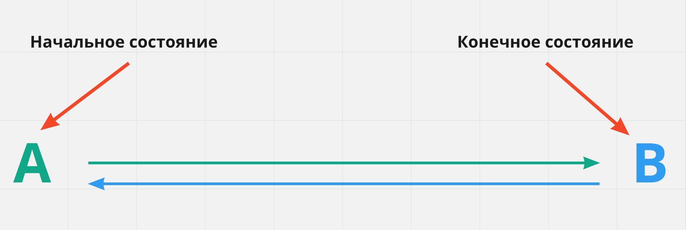
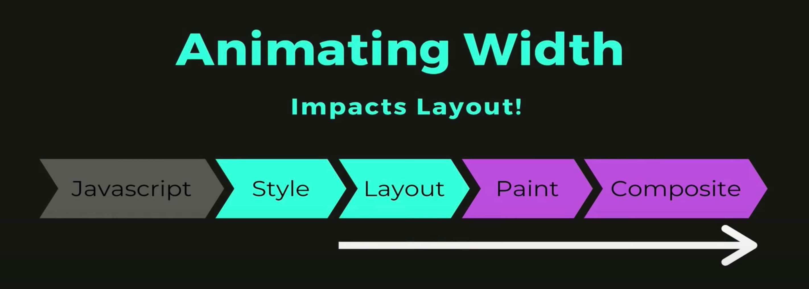
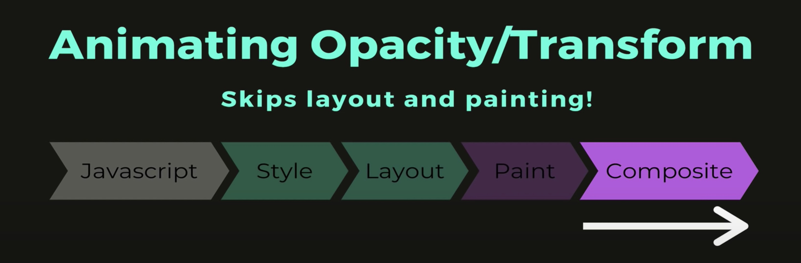
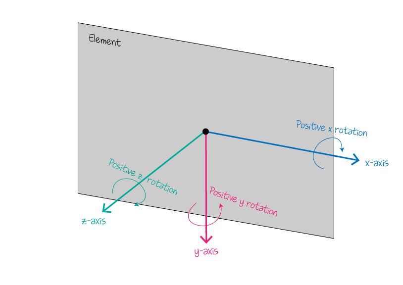

css переходы
css переходы позволяют анимировать изменения, значения свойства с течением времени, управляя скоростью этого перехода. Изменения свойства происходит при наступлении определенного события, которое описывается соответствующими псевдо классами, например hover
Переход имеет всегда только 2 состояния - начальное и конечное и умеет изменять его значение А -> В и В -> A за указаное время. Для анимации с большим кол-вом состояний необходимо использовать css анимацию
Следующие 4 свойства управляет различными параметрами перехода
transition-property: <свойство>
transition-duration: <время>
transition-timing-function: <функция распределения времени>
transition-delay: <задержка>
Все что необходимо сделать это указать начальное значение анимированых свойств перехода, после чего при событии, например ховер, задать новое значение свойства, до которого мы хотим анимировать элемент.
При добавлении каких-либо перемещений(переходов и анимаций) они должны быть простыми, не навязчивыми и логичными. Анимация должна передавать смысл, акцентируя внимание не отвлекая пользователя от взаимодействия с контентом.
Свойство transition-property
Задает свойства к которым будет применен эффект перехода. Значение может быть одно свойство или список свойств через запятую. По умолчанию значение all - анимируются все возможные свойства.
.box {
background-color: teal;
transition-property: background-color;
}
.box:hover {
background-color: orange;
}
Список свойств, которые могут быть анимированы, в будущем может изменятся. По этому обязательно указывать свойство, которое нужно анимировать всевозможные свойства элемента, что приведет к неожиданным результатам.
Свойство transition-duration
Если продолжительность перехода не указана, то изменение значений произойдет мгновенно, без анимации. Свойство transition-duration задает промежуток времени, в течении которого должен осуществиться переход. Указывается в секундах. Например 2s или 0.5s. Либо в милисекундах 2000ms или 500ms. Если разные свойства имеют разные значения времени перехода, то они перечисляются через запятую.
.box {
background-color: teal;
transition-property: background-color;
transition-duration: 1000ms;
}
.box:hover {
background-color: orange;
}
Переход в ms
Свойство transition-timing-function
Задает функцию распределения времени, которая описывает скорость перехода свойства от одного значения к другому за время, указаное в transition-duration, т.е поведение анимации.
.box {
background-color: teal;
transition-property: background-color;
transition-duration: 1000ms;
transition-timing-function: linear;
}
.box:hover {
background-color: orange;
}
В css есть несколько ключевых слов для описания базовых функций BEZIER. По умолчанию используется значение ease - переход начинается медленно, бысро ускоряется, а затем снова замедляется вконце. Остальные ключевые слова linear, ease-in, ease-out & ease-in-out.
Свойство transition-delay
Задержка, после которой начинается анимация перехода. Используется для построения сценариев, последовательности переходов разных элементов. По умолчанию задано значение 0 секунд.
Краткая запись перехода
Все свойства перехода можно объеденить в одно составное свойство перехода transition
transition: [property] [duration] [timing-function] [deley]
Если анимируется несколько свойств, то набор значений для каждого из них разделяется запятой. Необходимо обязательно указать свойство и время перехода. Функцию времени и задержку можно не указываеть, тогда для них будет использоваться значение по умолчанию.
transition: background-color 500ms linear, transform 500ms ease-in-out;
Сценарии с transition-delay
Запишем простой сценарий перехода цвета фона и вращение блока. Сначала блок должен изменить цвет и только после этого начать вращение. Все что необходимо сделать это указать переходу вращение, подождать столько времени сколько займет анимация смены цвета фона.
transition: background-color 500ms linear, transform 500ms ease-in-out 500ms;
Анимируемые свойства
Из всех свойств, которые могут быть анимированые рекомендуется по возможности использовать всего 2 - opacity и transform. В большинстве случаев анимирование других свойств незначительно повлияет на производительность страницы, но лучше придерживаться этого правила, чтобы создавать максимально производительную анимацию.
- Шаг первый. JScript или какое-то событие, например ховер или фокус запускает анимацию стилей элемента.
- Шаг второй. Style - происходит вычесление новых стилей элемента, расчитывается спицифичность, конфликты, каскадирование и т.п
- Шаг третий. Layout - выполняется расчет геометрий элементов. При анимации свойств, которые влияют на геометрию, например margin браузеру приходится вычеслять новую позицию для целой группы элементов.
- Шаг четвертый. Painting - происходит прорисовка слоев, потому что элементы вложены друг в друга или позиционированы, тем самым создавая слоеный пирог.
- Шаг пятый. Composite - компоновка всех подготовленных слоев и отрисовка финальной картинки на экране пользователя.
Например если анимировать свойство width браузеру прийдется выполнить шаги layout -> painting -> comosite, а это довольно дорогостоящая операция для производительности страницы.
Анимация свойства background не влияет на геометрию элементов, поэтому браузеру достаточно выполнить шаги только painting -> composite

Для анимации свойства opacity и transform браузеру не нужно расчитывать новую геометрию или перерисовывать слои, достаточно выполнить только шаг composite
Анимация 3000 элементов это довольно ресурсоемкая операция и может отображаться по разному, в зависимости от возможности компа
css анимация
Как и переходы анмация передает веб странице динамичность, но в отличии от переходов анимации не нужен обязательный инициатор(событие), ее можно повторить бесконечное кол-во раз и между начальным и конечным состоянием может быть любое кол-во промежуточных состояний.

Объявление анимации
Анимация объявляется директивой @keyframes которая позволяет описывать набор кадров(frames) анимации, которых должно быть как минимум 2 - началный и конечный
/* Имя должно быть описательным, то есть что это за анимация. */
@keyframes имяАнимации {
/* Тут будут описываться кадры */
}
Кадры определяют в какой момент времени изменятся анимируемые свойства и описывается ключевым словом from(псевдоним 0%) и to(псевдоним 100%) или чаще всего в виде процентов в промежутке 0% - 100%, т.к проценты позволяют указать произвольное значение
/* Имя должно быть описательным, то есть что это за анимация. */
@keyframes имяАнимации {
0% {
/* Свойства для изменения */bracketSpacing }
/* Произвольное количество промежуточных кадров */
100% {
/* Свойства для изменения */
}
}
В анимации не указывается время или элемент, к которому она будет применятся, это значит что одну и ту же анимацию можно использовать для разных элементов.
Объявим анимацию для изменения цвета фона элемента в трёх точках: 0%, 50% и 100%.
@keyframes changeBgColor {
0% {
background-color: teal;
}
50% {
background-color: orange;
}
100% {
background-color: deepskyblue;
}
}
Свойства анимации
Animation-name
Чтобы использовать уже объявленную анимации нужно указать ее имя в качестве значения для свойства animation-name
.box {
animation-name: changeBgColor;
}
Анимацию можно добавить к селектору, тогда она будет применена сразу при загрузки страницы. Так же можно применить анимацию при событии например ховер или фокус используя соответствующий псевдоклассы
. box {
/* Базовые стили элемента */
}
/* Добавляем анимацию по ховеру */
.box:hover {
animation-name: changeBgColor;
}
Animation-duration
Устанавливает продолжительность анимации - время, за которое будут пройдены все кадры. Задается в s или ms. Если не задается длительность то анимация будет мгновенной.
. box {
/* Базовые стили элемента */
}
/* Добавляем анимацию по ховеру */
.box:hover {
animation-name: changeBgColor;
animation-duration: 3000ms
}
По умолчанию анимация происходит 1 раз и финальное значение анимируемых свйоств не сохраняется. Вместо этого элемент возвращается к своему исходному состоянию.
animation-timing-function
Устанавливаем функции распределение времени для анимации. Значения аналогичны значениям transition-timing-function в css переходах.
.box {
animation-name: changeBgColor;
animation-duration: 3000ms;
animation-timing-function: linear;
}
animation-delay
Устанавливает задержку перед началом анимации в s или ms.
.box {
animation-name: changeBgColor;
animation-duration: 3000ms;
animation-timing-function: linear;
animation-delay: 1000ms;
}
animation-iteration-count
Устанавливает кол-во полных повторений анимации
.box {
animation-name: changeBgColor;
animation-duration: 3000ms;
animation-timing-function: linear;
animation-iteration-count: 5;
}
Значение может быть цецлым положительным числом или ключевым словом infinite - это сделает анимацию бесконечной.
animation-direction
Контролирует направление воспроизведения анимации от начального до конечного кадра, наоборот от конечного до начального, или может быть необходимо чтобы порядок чередовался на каждом направлении
.box {
animation-name: changeBgColor;
animation-duration: 3000ms;
animation-timing-function: linear;
animation-iteration-count: infinite;
animation-direction: alternate;
}
- normal - анимация воспроизводится от начального до конечного кадра, после чего сразу возвращается в начальный кадр до след повторения (сбрасывается в начальное состояние). Это значение по умолчанию.
- reverse - анимация воспроизводится в обратном направлении, начиная от конечного кадра и до начального, после чего возвращается в конечный кадр до след повторения.
- alternate - первый раз воспроизведение начинается от начального и до конечного кадра, после чего происходит изменение направления на каждом последующим повторении.
- alternate-reverse - воспроизведение начинается от конечного и до начального кадра, после чего происходит изменение направления на каждом следующем повторении.
animation-fill-mode
Определяет что происходит со стилями элемента до начала анимации и до ее окончания, т.е позволяет указать должны ли стили анимации применятся к элементу вне анимации
animation-fill-mode: none | forwards | backwards | both
- none - стили анимации влияют на элемент только во время анимации. До и после анимации элемента находятся в исходном состоянии (значение по умолчанию)
- forwards - стили, примененные вконце анимации остаются на элементе после ее окончания.
- backwards - стартовые стили анимации будут применены еще до старта анимации
- both - совмещает forwards и backwards, стили применяются до и после анимации
animation-play-state
Позволяет приостановить воспроизведение анимации. По умолчанию задано значение running. Если установить значение paused например на ховер анимация будет приостановлена, пока курсор мыши находится над элементом.
Свойство animation
Составное свойство позволяет более кратко записать свойство анимации.
animation: [name] [duration] [timing-function] [delay] [iteration-count] [direction] [fill-mode] [play-state]
Значение необязательных свойств можно пропустить или поменять местами, исключение составляют свойства duration и delay - значение длительности анимации всегда должно указываться до задержки
.box {
animation: magic 2s infinite;
}
.box {
animation: magic 2s 0.5s ease-in-out;
}
.box {
animation: magic 2s ease-in-out 0.5s forwards;
}
.box {
animation: magic 2s forwards infinite ease-out 0.5s;
}
@keyframes magic {
/* ... */
}
Перспективы
По умолчанию элемент рендерится в 2D пространстве и при трансформациях по осям Х и У, например rotate искажается и выглядит неестественно
В примере элементы div.deg повернуты на 45 градусов по осям Х и У. Они выглядят плоскими и искаженными, потому что им не хватает перспективы.
Функция perspective()
Задав perspective(400px) мы говорим браузеру о необходимости рендерить
div.box__deg-p в 3D пространстве, добавляя элементу глубину сцены и
объем. Значение 400 px это расстояние до сцены, на которой находится
элемент. Чем меньше значение, тем зритель ближе к сцене и наоборот
При использовании сразу на нескольких элементах у каждого задается
своя сцена и перспектива, т.е зритель как будто смотрит на каждый
элемент из разной точки
2D трансформация
css трансформации позволяют сдвигать, изменять масштаб и поворачивать элементы, т.е добавлять декоративные эффекты. Трансформации изменяют формы и положение элементов, не влияя на остальные элементы страницы. По умолчани. трансформация происходит относительно центра элемента, но это можно изменить
Свойство transform
Отвечает за применение одной или более трансформации элементу
transform: none | <тип трансформации> <тип трансформации> ...
Транформированый элемент - это элемент с любым установленным значением transform, отличим от none
Масштабирование
Функции scaleX(tx) и scaleY(ty) и scale(tx, ty) масштабирует блок по ширине и/или высоте, не влияя на геометрию окружающих элементов. Если для scale указано одно значение, второе будет тоже самое
.box {
transform: scale(1.15);
}
Начальный масштаб элемента 1. Значение от 1 до 0 уменьшает элемент, больше 1 - наоборот увеличивает, например значение scale(1.25) это 125% от начального размера, scale(0.75) - 75%
Поворот
Функция rotate(deg) поворачивает элемент на заданое кол-во градусов (deg). Положительное значение поворачивает элемент по часовой стрелке, отрицательное - против.
.box {
transform: rotate(45deg);
}
Значение можно передать не только в градусах но и оборотах (turn). Например rotate(0.5 turn) - это пол оборота, аналог rotate(180deg).
Смещение
Функции translateX(tx), translateY(ty) и translate(tx, ty) перемещают элемент в горизонтальном(ось Х) и/или вертикальном (ось У) направлениях относительно начального положения
- Положительные значения X смещают элемент вправо, отрицательные - влево.
- Положительные значения Y смещают элемент вниз, отрицательные - вверх.
Значения могут быть в пикселях или процентах. Если значение задано в %, то оно расчитывается от размеров смещаемого элемента.
.box { transform: translate(100px, 200px); }
Центрирование элемента
Рассмотрим прием, при помощи которого можно поставить абсолютно позиционируемый элемент точно по центру блока, относительно которого он позиционируется.
.box {
position: absolute;
top: 50%;
left: 50%;
transform: translate(-50%, -50%);
}
- Абсолютно позициоинируем элемент относительно предка.
- Задаём элементу свойства top и left со значением 50%, это поставит верхний левый угол элемента ровно по центру предка.
- Задаём элементу отрицательное смещение (translate) по 50% его высоты и ширины. Это подвинет элемент вверх и влево и отцентрирует внутри предка.
Искажение
Функции skewX(угол), и(угол) и skew(x-угол, y-угол) используются для искажения (наклона, деформирования) сторон элемента относительно координатных осей. Если для skew() указано только одно значение, второе будет равно 0, то есть это будет аналог skewX().
.box {
transform: skew(30deg);
}
Точки трансформации
Свойтво transform-origin позволяет сметить точку трансформации,
относительно которой происходит изменение положения, размера или форм.
Значение по умолчанию - центр или 50% 50%. Задается только для
трасформируемых элементов. Не наследуется.
В примере точка трансформации каждого элемента обозначена синей
точкой. Значение можно указать не только ключевыми словами, но так же
в пикселях или процентах.